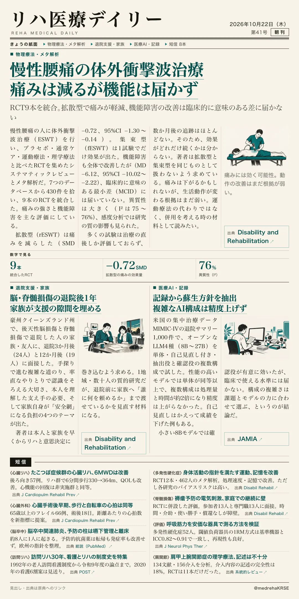
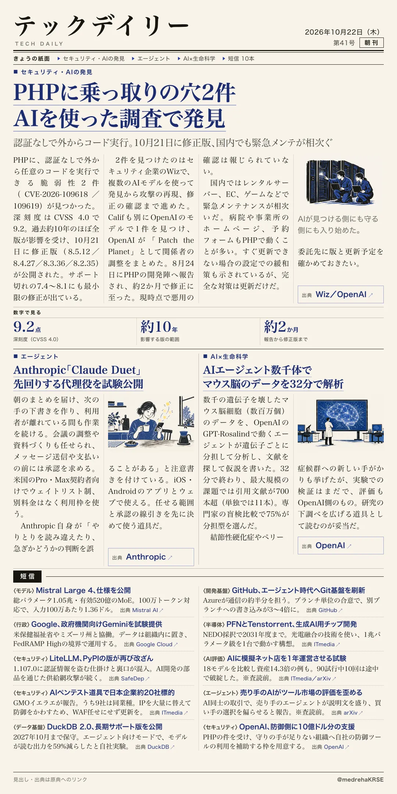

リハ医療デイリー
慢性腰痛の体外衝撃波治療 痛みは減るが機能は届かず
RCT9本を統合。拡散型で痛みが軽減、機能障害の改善は臨床的に意味のある差に届かない
慢性腰痛に体外衝撃波治療（ESWT）は効くのか。RCT9本を統合したメタ解析が出た。

テックデイリー
PHPに乗っ取りの穴2件 AIを使った調査で発見
認証なしで外からコード実行。10月21日に修正版、国内でも緊急メンテが相次ぐ
Webで広く使われるPHPに深刻な脆弱性2件が見つかり、AIを使った調査が発見に関わった。
